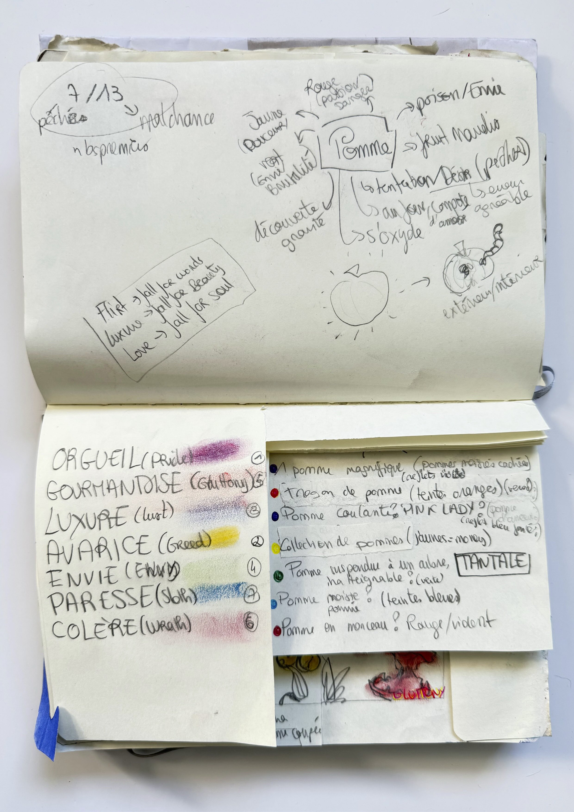
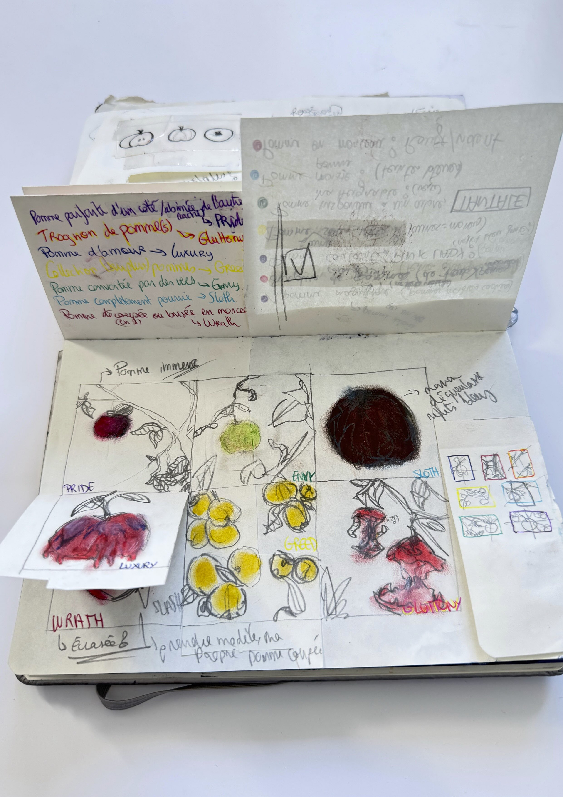


Ce projet personnel tournait autour de la question de la pomme, de ses interprétations. Ce fruit a acquis au cours de l'histoire et des mythes une symbolique du désir et de l'interdit. Pour expliciter cette vision, j'ai souhaité mettre en situation les 7 pêchés capitaux avec des pommes, le tout en pastel à huile.
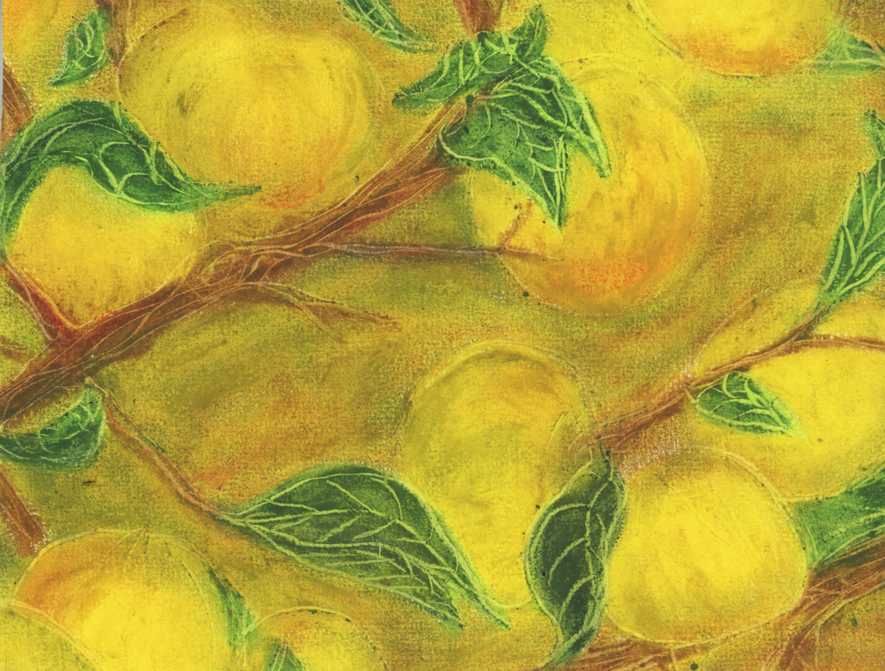
Je garde, je surveille
Sous clés, je conserve
Économe de par mon vice
Bloquer par mon Avarice
Un surplus de pommes, jaunes comme l'or
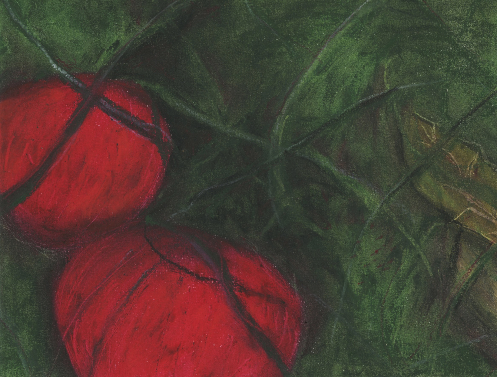
Violentes, rouges et pétantes,
Dures, fortes et marquantes,
Jetées à même le sol
D’une Colère folle
Rouge évoquant la colère, vert pour un contraste fort
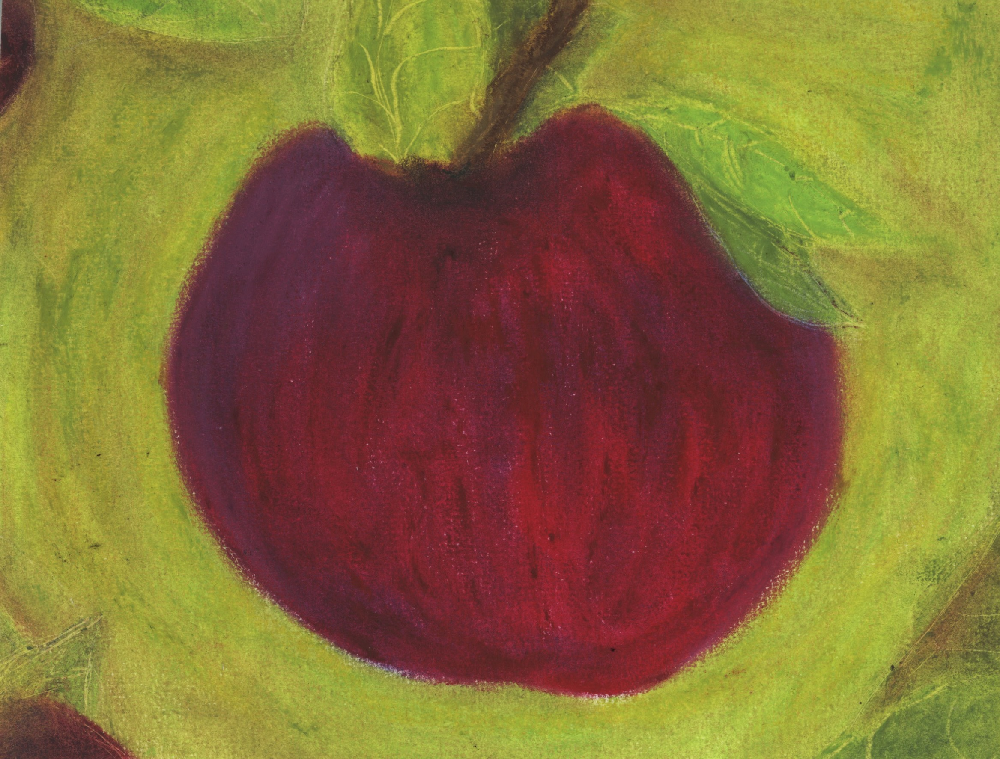
Ma supériorité ? Inégalée
Mon charisme ? Inconcidéré
Ma fierté ? Renforcée
Mon orgueil ? Délibéré
Gros égo, au centre, tout tourne autour d'elle
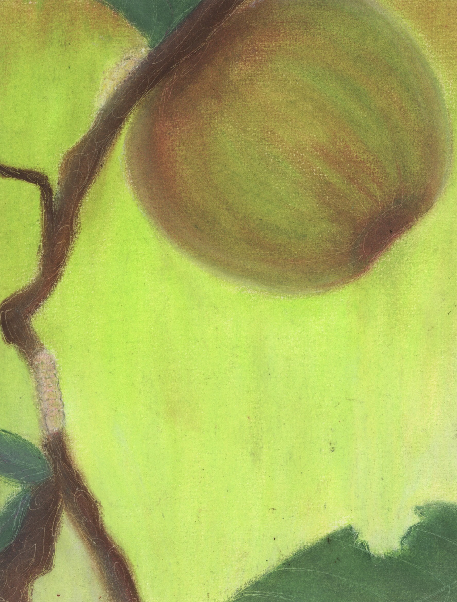
Une vie de Jalousie
De ce qui veut être pris,
De désirs infinis,
Ici remplis d’Envie
En hauteur car on veut toujours plus, l'envie des vers
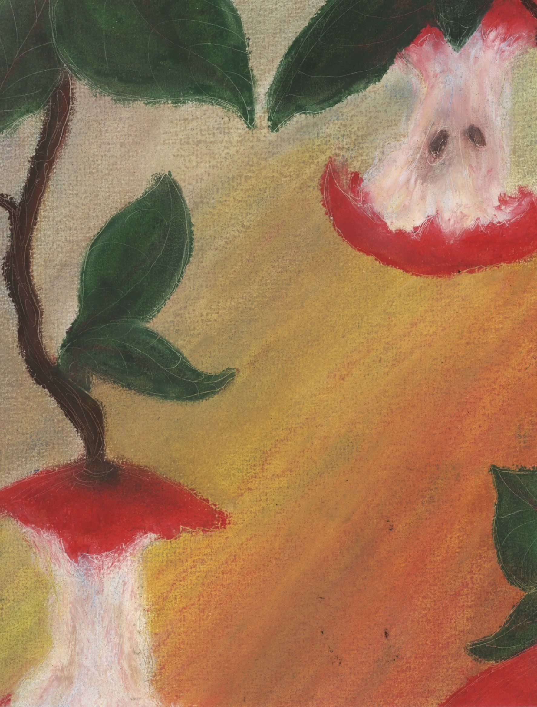
Croquer, grignoter
Se nourrir, englouttir
Engouffrer, dévorer
Sa Gourmandise l’attire
Pommes déjà mangées, à même les branches
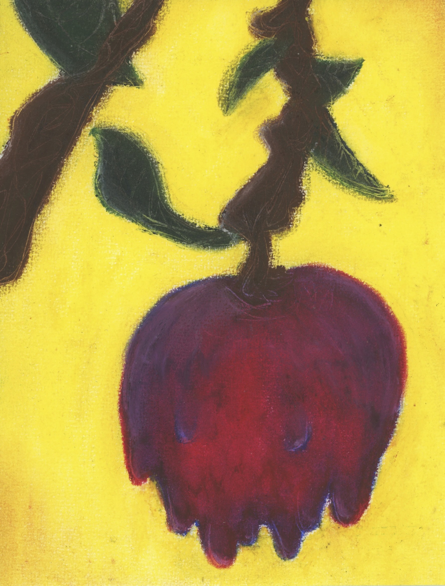
La rosée du petit jour
Qui de son aspect impur,
Laisse à voir une pomme d’amour
ainsi que sa Luxure
Aspect langoureux et reflets violets, couleur associée à la luxure
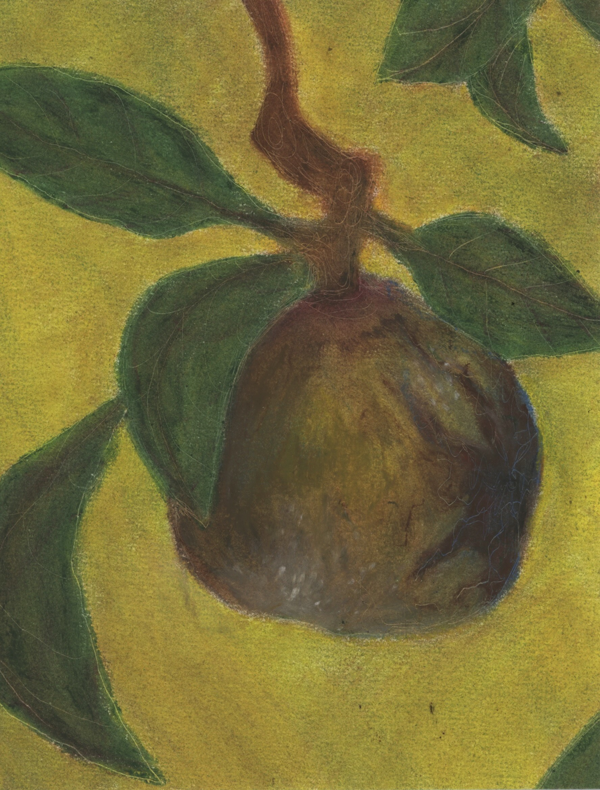
Pourrite, d’un ton marroné
Détruite, elle s’est faite oubliée
Ni ramassée, ni tombée
Par sa Paresse son destin est scellé
Double paresse, l'humain et la pomme
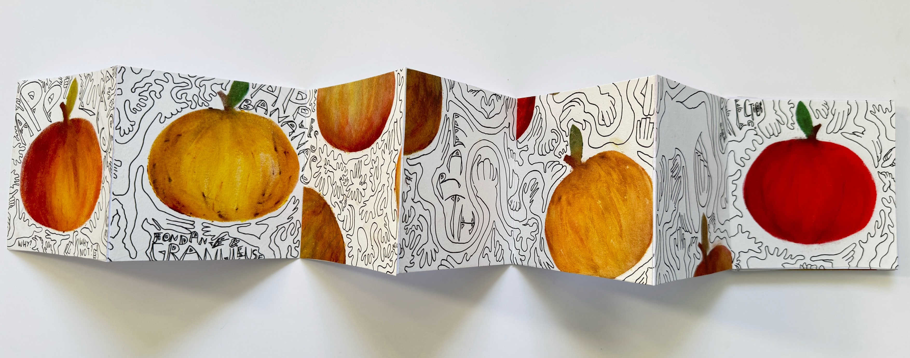
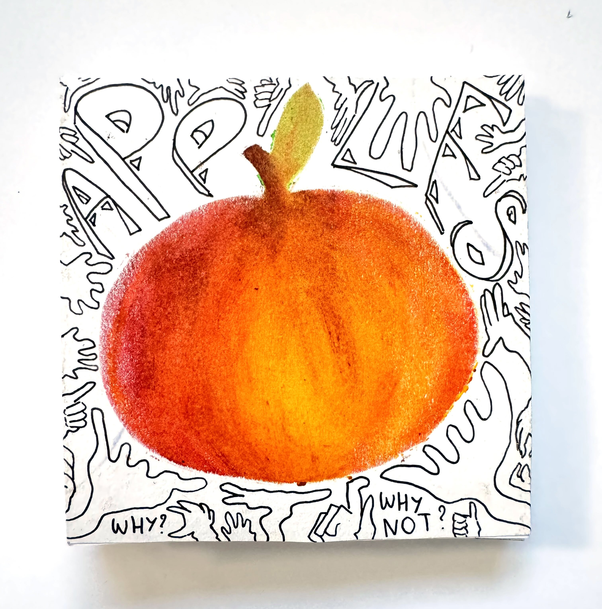
Leporello abordant la pomme cette fois-ci uniquement dans l'aspect du désir et de l'interdit.

